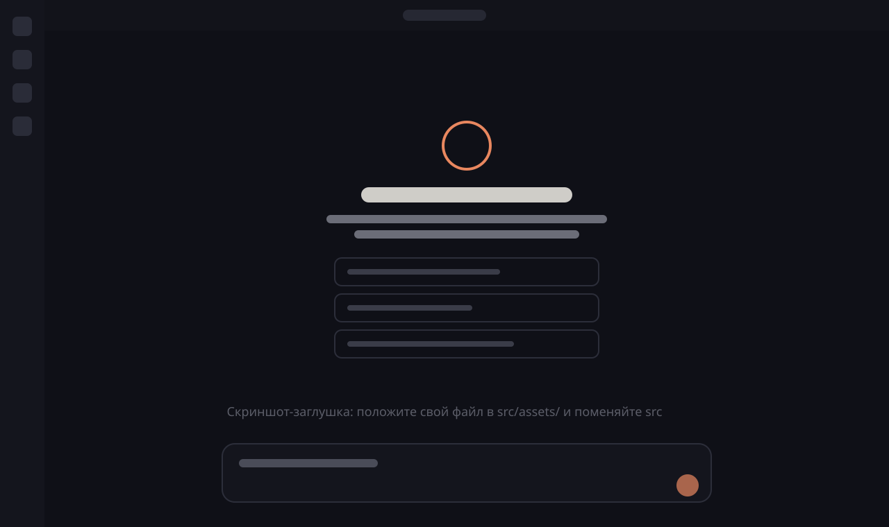

Первый шаг: где и с чего всё началось
Что заставило копнуть глубже
Что делал руками и что перестроил
С какой командой работал
Где делюсь опытом — и почему вы слышите это от меня
плитка — доказательство
цифры досчитываются при показе
null в DECK_DATA рисует пунктир
подпись в одну-две строки
Ниже девяти не поставил никто.
«Цитата участника — дословно, только заглавные и ё»
«Вторая цитата, короче первой»
«Третья — про то, что человек будет делать»
«Четвёртая — самая короткая»
«Цитата, которая задаёт задачу: главные слова выделены цветом»
Подпись-вывод одной строкой: что из этого следует.
Короткое пояснение в одну строку
Короткое пояснение в одну строку
Итог одной строкой — что это даёт каждому.
Первый режим: привычная рамка.
Второй режим появляется по клику, частицы собираются в TARDIS.
«Первый вопрос виден сразу»
«Второй — по клику»
«Третий — по клику»
«Четвёртый — по клику»
Одна строка — зачем он.
Где взять — одной строкойОдна строка — зачем он.
Self ServiceОдна строка — зачем он.
example.comТолько то, что подтвердил человек
Без выдуманных возможностей
Короткая формулировка
Связь со сценарием зала
Ситуация зала
Что делаете с инструментом
Что получаете
Якорь для незнакомого: командная строка — окно, где задачу пишут словами.

Контур задаётся точками, помощник resample раскладывает их равномерно — линии получаются чистыми.
Глагол и одна строка
ИнструментГлагол и одна строка
ИнструментГлагол и одна строка
ИнструментГлагол и одна строка
ИнструментЯ рядом — помогу запустить любой из инструментов.
Одна строка о том, что меняется
Одна строка о том, что меняется